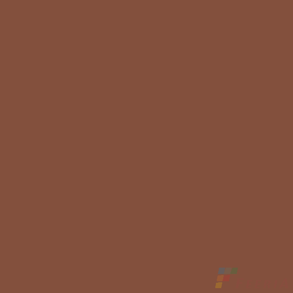

Грани Таганая GTF422M РЖАВЧИНА

Грани Таганая
- Размер
- 1200 × 600 мм
- Артикул
- GTF422M
- Наличие
- 680 м²
- Цена
- Цена по запросу
Остаток указан по данным на 1 октября 2026 года. Перед заказом уточните наличие и цену у менеджера.
Написать в TelegramПоможем рассчитать количество плитки для объекта, проверить остаток и согласовать самовывоз или доставку в Санкт-Петербурге и Ленинградской области.